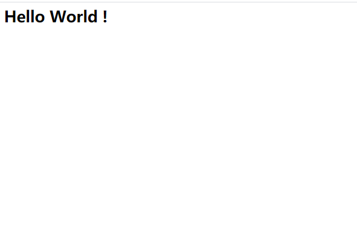

在工作中，通常会根据项目需要制作镜像，Docker可以通过读取Dockerfile文件中的指令来自动构建镜像，Dockerfile文本文件包含镜像构建的命令，通过 docker build 执行 Dockerfile中的一系列指令来自动构建镜像。除了Dockerfile的方式外，也可以使用Docker commit来制作镜像，本文将介绍Dockerfile语法Docker镜像的构建方法。
常用Dockerfile指令
Dockerfile官方文档：https://docs.docker.com/engine/reference/builder/
Docker 顺序执行Dockerfile文件中的指令，指令不区分大小写，为了区分，建议都大写。Dockerfile以 FROM 指令开始，FROM指令指定了构建的父镜像（基础镜像），Dockerfile使用 # 注释行，下面列出其它常用指令：
- COPY：从本地复制文件，复制文件或者目录到容器里指定路径
- ADD：可以从网络或者本地复制，将主机构建环境（上下文）目录中的文件和目录、以及一个URL标记的文件拷贝到镜像中，tar类型文件会自动解压。当需要从远程复制文件时，最好使用 curl 或 wget 命令来代替 ADD 命令。
- LABEL：为镜像生成元数据标签信息
- WORKDIR：指定工作目录，为后续的RUN、CMD、 ENTRYPOINT、ADD指令配置工作目录。
- USER：指定运行容器时的用户名或UID，后续命令执行也会使用指定用户。
- RUN：Dockerfile RUN命令是执行命令的核心部分，在
docker build时执行。它接受命令作为参数并用于创建镜像。每条RUN命令在当前基础镜像上执行，并且会提交一个新镜像层：RUN pip install flask - CMD：容器运行
docker run时执行的默认命令。 - ENV：容器启动的环境变量。
- ARG：构建环境的环境变量。
- ENTRYPOINT：指定容器的“入口”。
- HEALTHCHECK：用于指定某个程序或者指令来监控 docker 容器服务的运行状态
Dockerfile构建容器
常用文件、命令：
- .dockerignore：设置希望构建时需要忽略的文件，过滤指定文件
docker build -f Dockerfile文件名：指定Dockerfile文件docker build -t 标签：添加标签docker build --no-cache：不使用缓存，也就是每次构建时，不管有没有安装过都进行重新构建docker build --build-arg：传递ARG指令变量
1. 创建Dockerfile文件
构建一个dockerfile文件，定制一个Nginx镜像，添加容器健康检查。
Dockerfile：1
2
3
4
5
6
7
8
9
10
11
12
13
14
15
16
17
18
19
20
21
22
23
24
25
26
27
28
29
30
31
32
33
34
35
36
37
38
39
40
41
42 基于 nginx:latest 镜像构建
FROM nginx:latest
指定信息
LABEL maintainer="test_dockerfile"
设置环境变量
ENV NGINX_VERSION latest
ARG workpath=/data/html/
切换root用户
USER root
执行命令，安装cur软件，设置软链接把ngin服务的日志显示到终端
RUN apt-get -yq update && apt-get install -y curl && \
ln -sf /dev/stdout /var/log/nginx/access.log && \
ln -sf /dev/stderr /var/log/nginx/error.log
挂载卷
VOLUME ["/data"]
设置工作目录
WORKDIR $workpath
复制 index.html 文件到nginx的html目录下
COPY index.html /usr/share/nginx/html
映射80端口
EXPOSE 80
此处CMD作为 ENTRYPOINT的参数。
CMD ["nginx","-g","daemon off;"]
CMD ["-g","daemon off;"]
CMD nginx -g daemon off
设置容器启动的命令
ENTRYPOINT ["nginx","-g","daemon off;"]
STOPSIGNAL SIGRTMAX
检查容器健康，通过访问 Nginx服务80端口，来判断容器服务是否健康
HEALTHCHECK --interval=5s --timeout=3s \
CMD curl -fs http://localhost/ || exit 1
index.html文件内容：1
<h1>Hello World !</h1>
2. 构建镜像：docker build
在Dockerfile 文件目录下执行构建：1
$ docker build -t nginx:testv1 -f Dockerfile .
- nginx:testv1：镜像名称:镜像标签
- Dockerfile：Dockerfile 文件名，默认文件名为Dockerfile
.表示当前目录，代表本次执行的上下文路径
1 | [root@server test_dockerfile]# pwd |
查看镜像：1
2[root@server test_dockerfile]# docker images | grep nginx_demo
nginx_demo v1 adfe6b7f7297 5 minutes ago 133MB
3. 运行镜像：docker run
1 | [root@server test_dockerfile]# docker run -d --name=nginx-test -p 8080:80 nginx_demo:v1 |
docker ps 查看容器1
2
3[root@server test_dockerfile]# docker ps | grep nginx_demo
710628d0ad55 nginx_demo:v1 "/docker-entrypoint.…" 2 minutes ago Up 2 minutes (unhealthy) 0.0.0.0:8080->80/tcp nginx-test
[root@server test_dockerfile]#
浏览器输入：192.168.30.8:8080

可以进入容器查看设置的环境变量1
2
3
4
5
6
7
8
9
10
11
12
13
14
15
16
17
18
19
20
21
22
23
24
25
26
27
28
29
30
31
32[root@server test_dockerfile]# docker exec -it 710628d0ad55 bash
root@b0bd21087663:/data/html#
root@b0bd21087663:/data/html#
root@b0bd21087663:/data/html# pwd
/data/html
root@b0bd21087663:/data/html# ls
index.html
root@b0bd21087663:/data/html# env
HOSTNAME=b0bd21087663
PWD=/data/html
PKG_RELEASE=1~buster
HOME=/root
NJS_VERSION=0.5.0
TERM=xterm
SHLVL=1
PATH=/usr/local/sbin:/usr/local/bin:/usr/sbin:/usr/bin:/sbin:/bin
NGINX_VERSION=latest
_=/usr/bin/env
root@b0bd21087663:/data/html# id
uid=0(root) gid=0(root) groups=0(root)
root@b0bd21087663:/data/html# df -h
Filesystem Size Used Avail Use% Mounted on
overlay 45G 22G 24G 48% /
tmpfs 64M 0 64M 0% /dev
tmpfs 910M 0 910M 0% /sys/fs/cgroup
shm 64M 0 64M 0% /dev/shm
/dev/mapper/centos-root 45G 22G 24G 48% /data
tmpfs 910M 0 910M 0% /proc/asound
tmpfs 910M 0 910M 0% /proc/acpi
tmpfs 910M 0 910M 0% /proc/scsi
tmpfs 910M 0 910M 0% /sys/firmware
root@b0bd21087663:/data/html#
Docker commit
Docker commit一般用做从一个运行状态的容器来创建一个新的镜像，对外不可解释，不知道容器有什么应用，不方便排查问题，可维护性差。Dockerfile的方式更容易排查问题。
Docker commit构建命令：1
$ docker commit 容器名 新镜像名:tag
对于上面构建的镜像，如果对index.html文件内容修改后重新打包一个镜像，我们可以使用Docker commit来构建：1
[root@server ~]# docker commit nginx-test nginx_demo:v2
启动：1
[root@server ~]# docker run -d --name=nginx-test2 -p 8080:80 nginx_demo:v2
本文标题:容器技术介绍：Dockerfile语法指令及Docker镜像构建
文章作者:hiyo
文章链接:https://hiyongz.github.io/posts/container-docker-dockerfile/
许可协议:本博客文章除特别声明外，均采用CC BY-NC-ND 4.0 许可协议。转载请保留原文链接及作者。